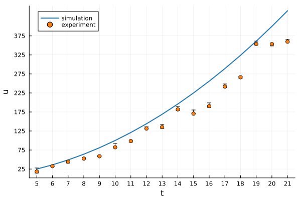
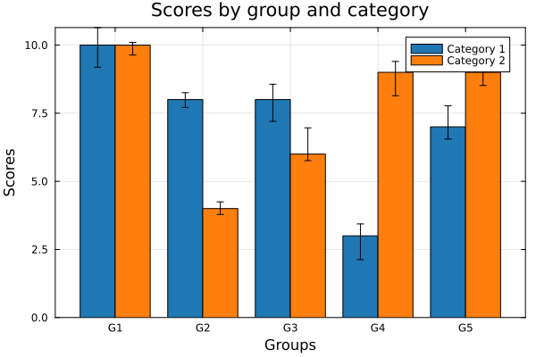
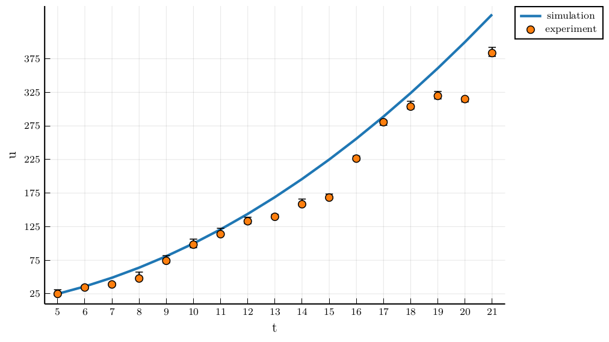

Plots
This tutorial describes the following Plots.jl concepts: backends, themes and color schemes. These settings are useful both for visualizing HetaSimulator objects and any other data. For detailed information on basic Plots.jl usage please consult the documentation.
The following artificial data and functions will be used to illustrate the tutorial:
using Plots, StatsPlots, Distributions
f(z) = z^2
x = 5:21
lenx = length(x)
y = [rand(Uniform(0.7,1))*f(xᵢ) for xᵢ in x]
yerr = (5*rand(lenx),10*rand(lenx))
Ybar = rand(1:10, 5, 2)
Ybarerr = (rand(5, 2),rand(5, 2))
function simulation_plot(; kwargs...)
p = plot(; xticks = x, ytick=25:50:400, kwargs...)
plot!(p, x, f; label="simulation", lw=2)
scatter!(p, x, y; yerror=yerr, label="experiment")
end
function groupedbar_plot(; kwargs...)
ctg = repeat(["Category 1", "Category 2"], inner = 5)
nam = repeat("G" .* string.(1:5), outer = 2)
groupedbar(nam, Ybar, group=ctg, xlabel = "Groups", ylabel = "Scores",
title = "Scores by group and category", yerror=Ybarerr, framestyle = :box, kwargs...)
end
Backends
Plots.jl is the single interface to different visualization backends (libraries). The choice of the backend depends on the task as each backend has it's strength and weaknesses. The full list of supported backends is provided in Plots backends documentation. You can find some advices on backends usage on Julia discourse. Here we will focus on the most popular backends.
GR
GR backend is set by default. It is fast and simple and should be preferred for basic visualization. If you are looking for advanced features or publication quality plots it may not suit you. It is installed with:
using Plots
gr()
simulation_plot()
groupedbar_plot() 
PlotlyJS
PlotlyJS backend is good for interactive plots or webpages. You can both visualize the data and interactively get the values of data point on the plot. It can be installed with:
using Plots
plotlyjs()
simulation_plot()
PGFPlotsX
PGFPlotsX backend uses LaTeX and it is considered the backend suitable for publications. PGFPlotsX requires a LaTeX installation (e.g. MiKTeX) The package can be installed with:
pgfplotsx()
simulation_plot()
groupedbar_plot() 
Plot themes
One can adjust plot themes (background, etc) by changing the default theme. Other themes are described in the PlotThemes.jl documentation
Color schemes
To set the color palette one can use ColorSchemes.jl package